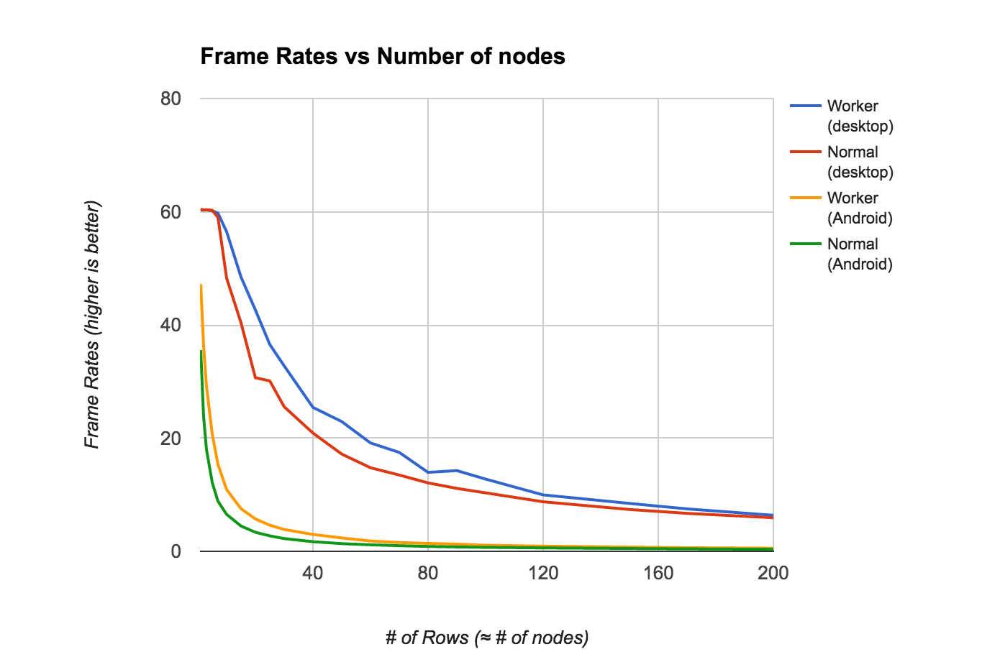
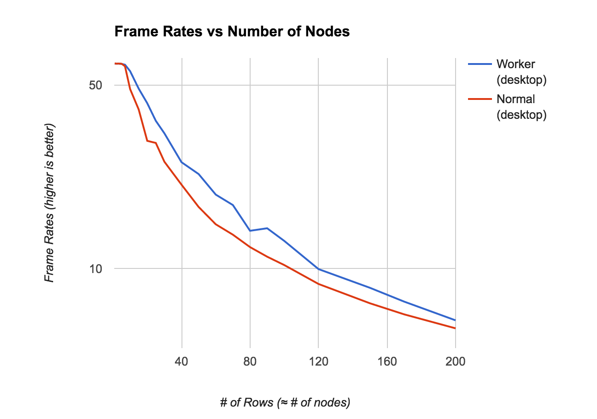

【译】用 Web Worker 为 React 提速
标准的 React 应用由两部分构成—React library 负责绝大部分的复杂的 Virtual DOM 计算，React-Dom 负责与浏览器真实 DOM 交互来展示内容。这两部分都是通过 script 标签引入到页面并运行在主线程上的。
在几周前我曾写了一片文章，也写了一些试验性的代码，尝试在 Web Worker 中运行 React Virtual DOM 的相关计算，而不是传统的在主线程中进行。我也做了一些性能测试来分析可能影响渲染速度的参数，比如节点数量等。
之前以为
之前的实验结论是，我们不能绝对的说 Web Worker 可以对渲染速率。只有当大量的节点发生变化的时候，Web Worker 提升渲染性能才会有一些效果。实际上，当节点数量非常少的时候(大多数应用中)，Web Worker 的性能可能还不如 React 本身实现。
其实并不完全对
Web Worker 之所以慢的原因是因为大量的时间花费在了 Web Worker 与 主线程的消息通信上，所以我为了解决这个问题，试图找一个“通信最优方案”，网上有不少人给我提了宝贵经验：
1. 第一条建议 是传递消息的时候用 transferable objects 来代替 JSON。在 Worker 和主线程之间，我想要传递的被操作 DOM 的数据结构可能不是一个稳定的结构，因此，我需要制定一个公共的协议。
2. 第二条建议 是直接传递信息的时候用JSON.stringify，我猜这其实和 transferable objects 类似，这里还有一条来自 IndexedDB 作者的 评论 。
用stringifying在主线程和 worker 中传递消息，React on Web Worker 可以比 传统的 React 更快了，而且好处会随着节点数量增加而增加。
我写了一个基于 browser-perf 自动化脚本用来计算帧速率，下图是生成的图表。测试分别运行在 Mac pro 上的 Chrome 和 Nexus 安卓设备。  当节点数量超过100个的时候，区别可能不是很明显了，为了让区别更明显，下表是在 pc chrome 上对比的帧速率。  如图所示，React Worker 版本都比标准 React 快，最坏情况是一样快，随着节点数量的增加区别也会越来越明显。
一个好的试验是可复现的，你可以用查看 这里 来运行这个测试来收集结果，或者直接用 Chrome 的 FPS meter 来看 worker 和 normal 页面。
一个真实的 app
上面介绍了它在示例 DBMonster 上运行的结果，而更重要的是要把它运行到真实的场景当中。我写了一个 todo app 来展示将 Web worker 与 React 结合，开发时都有哪些不同。其实 变化 也并不是很多，我们基本上只需要把 React 和 React-DOM 分别引入到 worker 和主页面中。
浏览器事件
Web Worker 不能直接操作 DOM，也就是说不能监听 click 或者 scroll 事件。目前，React 有一套 Event System 在最顶层监听所有的浏览器事件，将它们转化为虚拟的事件并传递给我们在 Virtual DOM 上定义的事件监听者。
对于我们的 Web worker，我重用了这个事件监听者并订阅了所有事件。因此，所有事件都在主线程中处理，转化为虚拟事件并传递给 worker，也就意味着所有关于创建虚拟事件的操作都在主线程中进行，一个可能改善的方案是，可以将原始事件传递给 worker，由 worker 来生成模拟事件并冒泡传递。
另外一个问题是关于preventDefault() 或者 stopPropogation()，这篇 文章 也介绍这个问题。在浏览器中响应事件是同步操作，而与 Web worker 传递数据和获取结果的操作是异步的。因此，我们需要找到一种方式来确保在 worker 在处理事件中的时候我们是否需要阻止默认事件。
目前来说，我简单的阻止了所有的默认行为，但是这里为了确保正确性，有两个选择，像 vjeux 的建议 ，我们需要用一个可以被序列化并传递到主线程的 function。另一个选择 是阻止当前的事件并触发另外一个事件以防 preventDefault不被触发。
我还在其他的框架中寻找更好的解决方案，一定会有一个很好的模式来解决这个问题。
下一步计划
通过测试我们可以得出结论是 Web Worker 是好的，也许我们将会经历所有主流 Javascript 框架都用 Web Worker 来处理复杂的计算的新时代。
我的实验可能会有一些瑕疵，我也会在真正的 app 中尝试，如果你有建议或者有兴趣尝试，我很愿意与你一起，你可以联系我,或者在 github 上发 pull request！